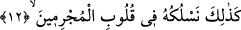
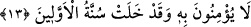

gelmeyedursun,” bu kâfirlerin yaptığı gibi “hemen onunla alay ederlerdi.” Âyete
şöyle mânâ vermek de mümkündür: “Onlara alay ettikleri peygamberden başka bir
peygamber gelmiyordu.”
Burada peygamberlerle alay etmenin câhillerin âdeti belirtilerek Rasûlullah (s.a.)
tesellî edilmektedir.
12. İşte böylece Biz onu, (inkârcılığı) suçluların kalplerine sokarız.
“İşte böylece” öncekilerin kalblerine alaya almayı soktuğumuz gibi “Biz onu”
bunların alaya almasını, “suçluların” Mekke müşriklerinin ve yalanlayıp alay etme
hususunda bunlara tâbi olanların “kalplerine sokarız.” yâni, bu fiili yaratır ve onların
kalblerine güzel gösteririz.
13. Öncekilerin başına gelenlerden ders almaları gerekirken onlar hâlâ buna
(Kur’an’a) inanmıyorlar.
“Öncekilerin başına gelenlerden ders almaları gerekirken” yâni, Allah Teâlâ’nın
kendilerinden öncekileri, helâk ederken âdet edindiği şey, yaptıkları yalanlama ve
istihza etme meydana geldiği halde, “onlar hâlâ buna” zikre/Kur’an’a “inanmıyorlar.”
Bu âyet, önceki âyetin açıklaması mâhiyetindedir. Ebussuûd Efendi (r.h.) ise bu
âyetin, önceki âyetin delâlet ettiği “alay ederek vahyi almaları” mânâsına işâret olduğu
görüşünü tercih etmiştir. Ebussuûd Efendi’nin anlayışına göre âyetin mânâsı şöyle
olmaktadır: İşte biz, peygamberleriyle ve bunların kendilerine getirdiği kitaplarla alay
eden bu grupların kalblerine zikri nasıl soktuysak Mekkelilerin veya mücrimler
gürûhunun kalplerine de öylece, yâni yalanlanmış ve îmân edilmemiş bir şey olarak
soktuk. Çünkü onlar Nebi (s.a.)’in okuduğu Kur’an’ı dinliyorlar ve Kur’an kalplerine
giriyordu. Böyle olmasına rağmen yüzüstü bırakılanlar (ehl-i hizlan) zümresinden
olmaları hasebiyle hakkı kabûle istidâdları olmadığından dolayı îmân etmiyorlardı.
Sa‘dî (k.s.) der ki:
Zan sâhibi olan kimse
Hak sözü işitir zannetme
Ona ilimden melâl, öğütten âr gelir
Taşın üstünde yağmur ile şakayık bitmez